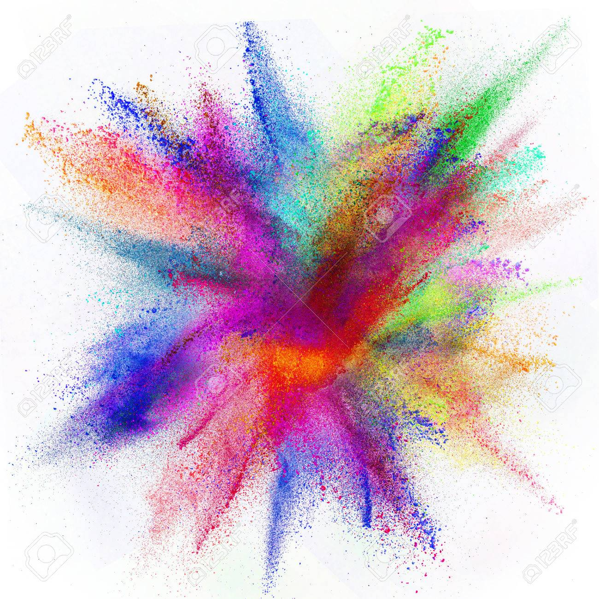

2000.00.00
내가그린기린그림
어렸을때 그린 그림입니다.

2000.00.00
내가두번째그린기린그림
명왕성의 위성들은 불안정하게 흔들린다. 명왕성에는 위성이 5개 있다. 카론은 구형이고, 주천체에 비해 특이하게 큰 반면, 닉스와 히드라, 케르베로스, 스틱스는 작고 불규칙하게 생긴 덩어리이다. 카론과 명왕성은 조석 고정이 일어나 항상 서로 같은 면을 바라보고 있다. 나머지 위성들은 그렇지 않다. 2015년, 허블 망원경은 닉스와 히드라에 반사돼 나오는 빛에서 비정상적인 변이를 관측했다.